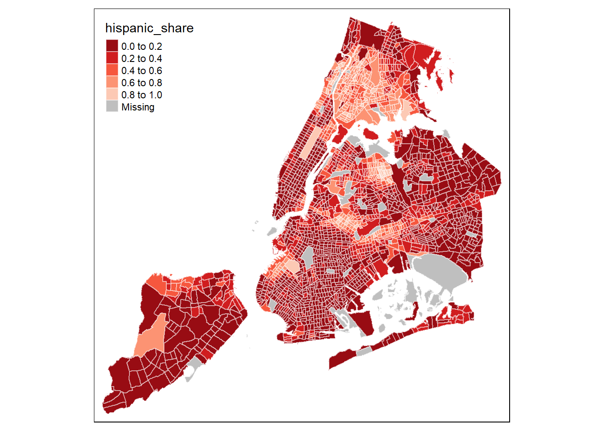

R ile Mekansal Veri Analizi
1 Mekansal verilerin okunması ve yazılması
1.1 Vektör dosyaları
Vektör dosyaları genellikle shp(Shapefile), json, geojson uzantılı dosyalar biçiminde bulunmaktadır. Diğer bir çok dosya biçimine ile ilgili bilgili wikipedia içeriğinden öğrenilebilir. Ancak biz mevcut çalışmamızda genelikle shp vs json uzantılı dosyaları kullanacağız.
Başlangıç aşamasında shp vs json verileriyle ilgili olarak önemli bir ayrıntıyı belirtmekte fayda bulunmaktadır.
- Shapefile (
shp) verileri zorunlu olarak beraberinde.shx.dbftüründeki verileri gerektirmektedir..shpverileri yalnızca geometrik bilgileri saklarken bu veriler indeksler ve diğer sütunsal verilerin saklanmasını sağlamaktadır. Shapefile verileri indirildiğinde genellikle bu uzantılı veri dosyaları da beraberinde gelmektedir. O sebeple bu dosyaların silinmemesi, Shapefile dosyaları ie aktarma işlemleri yapılırken bu dosyaların isimleri değiştilmeden.shpuzantılı dosya ile aynı çalışma dizininde bulunması gerekmektedir. jsonvegeojsonverileri ise Shapefile dosyalarınad farklı olarak yukarıda sayılan tüm bağımlılık gerektiren bilgileri text formatında kendi içinde saklamaktadır. Bu sebeple yalnızca tek dosya ile tüm bilgiler kontrol edilebilmektedir.
library(sf)
library(tidyverse)
nc <- st_read(system.file("shape/nc.shp", package="sf"))## Reading layer `nc' from data source `C:\Users\leventcan.gultekin\Documents\R\R-3.5.1\library\sf\shape\nc.shp' using driver `ESRI Shapefile'
## Simple feature collection with 100 features and 14 fields
## geometry type: MULTIPOLYGON
## dimension: XY
## bbox: xmin: -84.32385 ymin: 33.88199 xmax: -75.45698 ymax: 36.58965
## epsg (SRID): 4267
## proj4string: +proj=longlat +datum=NAD27 +no_defsclass(nc)## [1] "sf" "data.frame"attr(nc, "sf_column")## [1] "geometry"print(nc[9:15], n = 3)## Simple feature collection with 100 features and 6 fields
## geometry type: MULTIPOLYGON
## dimension: XY
## bbox: xmin: -84.32385 ymin: 33.88199 xmax: -75.45698 ymax: 36.58965
## epsg (SRID): 4267
## proj4string: +proj=longlat +datum=NAD27 +no_defs
## First 3 features:
## BIR74 SID74 NWBIR74 BIR79 SID79 NWBIR79 geometry
## 1 1091 1 10 1364 0 19 MULTIPOLYGON (((-81.47276 3...
## 2 487 0 10 542 3 12 MULTIPOLYGON (((-81.23989 3...
## 3 3188 5 208 3616 6 260 MULTIPOLYGON (((-80.45634 3...str(nc)## Classes 'sf' and 'data.frame': 100 obs. of 15 variables:
## $ AREA : num 0.114 0.061 0.143 0.07 0.153 0.097 0.062 0.091 0.118 0.124 ...
## $ PERIMETER: num 1.44 1.23 1.63 2.97 2.21 ...
## $ CNTY_ : num 1825 1827 1828 1831 1832 ...
## $ CNTY_ID : num 1825 1827 1828 1831 1832 ...
## $ NAME : Factor w/ 100 levels "Alamance","Alexander",..: 5 3 86 27 66 46 15 37 93 85 ...
## $ FIPS : Factor w/ 100 levels "37001","37003",..: 5 3 86 27 66 46 15 37 93 85 ...
## $ FIPSNO : num 37009 37005 37171 37053 37131 ...
## $ CRESS_ID : int 5 3 86 27 66 46 15 37 93 85 ...
## $ BIR74 : num 1091 487 3188 508 1421 ...
## $ SID74 : num 1 0 5 1 9 7 0 0 4 1 ...
## $ NWBIR74 : num 10 10 208 123 1066 ...
## $ BIR79 : num 1364 542 3616 830 1606 ...
## $ SID79 : num 0 3 6 2 3 5 2 2 2 5 ...
## $ NWBIR79 : num 19 12 260 145 1197 ...
## $ geometry :sfc_MULTIPOLYGON of length 100; first list element: List of 1
## ..$ :List of 1
## .. ..$ : num [1:27, 1:2] -81.5 -81.5 -81.6 -81.6 -81.7 ...
## ..- attr(*, "class")= chr "XY" "MULTIPOLYGON" "sfg"
## - attr(*, "sf_column")= chr "geometry"
## - attr(*, "agr")= Factor w/ 3 levels "constant","aggregate",..: NA NA NA NA NA NA NA NA NA NA ...
## ..- attr(*, "names")= chr "AREA" "PERIMETER" "CNTY_" "CNTY_ID" ...En basit haliyle nc dataframe’indeki geometry kolonuna plot fonksiyonu uygulandığında haritanın geometrisine ulaşabiliriz. Bu örneğimizde geometry alanı MULTIPOLYGON karakteristiğinde olduğu için karşımıza boş bir poligon harita çıktı. Eğer geometry alanı ilerdeki örneklerde sıkça göreceğimiz gibi MULTIPOLYGON karakteristiğinde olsaydı plot fonksiyonu uygulandıktan sonra karşımıza boş bir düzlemde dağılmış noktalar görecektik.
plot(nc$geometry)1.2 Raster dosyaları
Bu çalışmanın ana odağı raster odağı olmamak ile birlikte kısa bir gösterim yapabiliriz.
Daha uygun bir boyutta raster dosyası bulunabilir
2 Mekansal Katman Birleştirme
Gerçek hayattaki uygulamalarımızda genellikle mekana ilişkin verilerimiz xlsx, csv gibi dosyalarda veya veritabalarında iken mekansal geometrik veriler genellikle shp, json, `geojson gibi dosyalarda bulunmaktadır. Katman birleştirme (Spatial join) işlemi ile birlikte genellikle bu iki verinin birbiri ile eşleştirilmesini sağlarız.
Örnek olarak aşağıdaki veri setinden gidelim.
library(readxl)
iller_nufus <- read_excel("data/turkey/iller_nufus_2019.xlsx")
il_harita <- st_read("data/turkey/TR3_Map.json")## Reading layer `TR3_Map' from data source `C:\Users\leventcan.gultekin\Documents\--DOSYALARIM\R-Projects\GitHub\Mekansal_Analiz_R\data\turkey\TR3_Map.json' using driver `GeoJSON'
## Simple feature collection with 81 features and 5 fields
## geometry type: MULTIPOLYGON
## dimension: XY
## bbox: xmin: 25.66851 ymin: 35.80857 xmax: 44.81861 ymax: 42.0985
## epsg (SRID): 4326
## proj4string: +proj=longlat +datum=WGS84 +no_defsİki dataframe nesnesi incelendiğinde ikisi arasında ortak olarak NUTS_ID ve BOLGEKOD alanlarının ortak olduğu görülmektedir.
str(iller_nufus, max.level=3)## Classes 'tbl_df', 'tbl' and 'data.frame': 81 obs. of 4 variables:
## $ YIL : num 2019 2019 2019 2019 2019 ...
## $ BOLGEKOD: chr "TR100" "TR211" "TR212" "TR213" ...
## $ IL_ADI : chr "Istanbul" "Tekirdag" "Edirne" "Kirklareli" ...
## $ NUFUS : num 15519267 1055412 413903 361836 1228620 ...str(il_harita, max.level=1)## Classes 'sf' and 'data.frame': 81 obs. of 6 variables:
## $ STAT_LEVL_: int 3 3 3 3 3 3 3 3 3 3 ...
## $ NUTS_ID : Factor w/ 81 levels "TR100","TR211",..: 1 2 3 4 5 6 7 8 9 10 ...
## $ SHAPE_Leng: num 5.84 4.64 5.07 4.09 9.91 ...
## $ SHAPE_Area: num 9342 11274 10567 11732 24327 ...
## $ Country : Factor w/ 1 level "TR": 1 1 1 1 1 1 1 1 1 1 ...
## $ geometry :sfc_MULTIPOLYGON of length 81; first list element: List of 4
## ..- attr(*, "class")= chr "XY" "MULTIPOLYGON" "sfg"
## - attr(*, "sf_column")= chr "geometry"
## - attr(*, "agr")= Factor w/ 3 levels "constant","aggregate",..: NA NA NA NA NA
## ..- attr(*, "names")= chr "STAT_LEVL_" "NUTS_ID" "SHAPE_Leng" "SHAPE_Area" ...Ortak olan kolonları kulllanrak iller_nufus dataframe’indeki tüm verileri il_harita dataframe’i ile birleştirebiliriz.
il_harita <- il_harita %>% left_join(iller_nufus, by = c("NUTS_ID"="BOLGEKOD"))
head(il_harita)## Simple feature collection with 6 features and 8 fields
## geometry type: MULTIPOLYGON
## dimension: XY
## bbox: xmin: 25.66851 ymin: 39.05698 xmax: 29.86549 ymax: 42.0985
## epsg (SRID): 4326
## proj4string: +proj=longlat +datum=WGS84 +no_defs
## STAT_LEVL_ NUTS_ID SHAPE_Leng SHAPE_Area Country YIL IL_ADI
## 1 3 TR100 5.840081 9341.87 TR 2019 Istanbul
## 2 3 TR211 4.642952 11274.27 TR 2019 Tekirdag
## 3 3 TR212 5.072686 10566.52 TR 2019 Edirne
## 4 3 TR213 4.091844 11731.51 TR 2019 Kirklareli
## 5 3 TR221 9.907496 24326.62 TR 2019 Balikesir
## 6 3 TR222 8.304526 16693.71 TR 2019 Çanakkale
## NUFUS geometry
## 1 15519267 MULTIPOLYGON (((29.05575 41...
## 2 1055412 MULTIPOLYGON (((28.18284 41...
## 3 413903 MULTIPOLYGON (((26.88127 41...
## 4 361836 MULTIPOLYGON (((28.02801 41...
## 5 1228620 MULTIPOLYGON (((27.89804 40...
## 6 542157 MULTIPOLYGON (((27.31631 40...Bu işlemi yaptıktan sonra il bazında nüfusu gösteren tematik harita ve diğer çeşitli mekansal analizler yapılabilir. Ancak şu aşamada bu örneği burada bırakmak istiyorum. Gelecek bölümlerdeki çalışmalarda uluslararası diğer zengin veri kaynaklarını tercih edeceğim. Özellikle GEO DA Center’ da yer alan verileri. Burada yer alan mekansal veriler genellikle shp veya json verileri içerisine katman birleştirme işlemi hali yapılmış şekilde araştırmacılara sunulmaktadır. Dolayısıyla ileriki görselleştirme ve mekansal ekonometri ile ilgili bölümlerde katman birleştirme işlemini yapmayacağız. Ancak gerçek hayattaki araştırmaların neredeyse hepsinde katman birleştirme işlemleri uygulamak gerektiği için yukarıdaki iş akışını bilmekte fayda bulunmaktadır.
3 Veri Görselleştirme
Çalışmada örnek veriseti olarak NYC socio demographics veri setini kullanıyoruz.
nyc <- st_read("data/nyctract_acs/NYC_Tract_ACS2008_12.shp")## Reading layer `NYC_Tract_ACS2008_12' from data source `C:\Users\leventcan.gultekin\Documents\--DOSYALARIM\R-Projects\GitHub\Mekansal_Analiz_R\data\nyctract_acs\NYC_Tract_ACS2008_12.shp' using driver `ESRI Shapefile'
## Simple feature collection with 2166 features and 113 fields
## geometry type: MULTIPOLYGON
## dimension: XY
## bbox: xmin: -74.25559 ymin: 40.49612 xmax: -73.70001 ymax: 40.91553
## epsg (SRID): NA
## proj4string: NAlibrary(tmap)
tm_shape(nyc) +
tm_polygons()Her bir mahalledeki Hispanik kökenli nüfüsun toplam nüfus içerisindeki payını hesaplayalım.
nyc$hispanic_share <- nyc$hispanic/nyc$poptot
tm_shape(nyc) +
tm_polygons("hispanic_share")Objemizde koordinat referans sisteminin tanımlanmadığını görüyoruz
st_crs(nyc)## Coordinate Reference System: NAtm_shape(nyc) +
tm_bubbles("hispanic_share")
tmap paketi içerisinde projeksiyonlar daha önceden veri yapısı değiştirilmeden görselleştirme esnasında değiştirilebilmektedir.
tm_shape(nyc) +
tm_polygons("hispanic_share")tmap paketinin en avantajlı yani tematik haritaların çok az kodla temiz bir şekilde üretebilmemize imkan tanımasıdır. R ekosistemindeki görselleştirme alanındaki en iyi paket kuşkusuz ggplot2 paketidir. ggplot2 ile mekansal veri görselleştirmesine ek olarak bir çok türdeki statik görselleştirme çok başarılı şekilde yapılabilmekte, kullanıcıya çok fazla esneklik tanınmaktadır. Ancak ggplot2 doğası itibariyle kullanıcıya genelleştirilmiş bir çerçeve sunduğu için, baskıya hazır br coğrafi görselleştirmede tmap’e kıyasla çok daha fazla kullanıcın özelleştirilmiş kod yazmasını gerektirmektedir. Kimi zaman çok kompleks bir işi gerçekleştirmek istediğimizde ggplo2’yi kullanabiliriz. Ama çoğu durumda tmap yeterli bir seçenektir.
Şimdi yukarıda yaptığımız haritayı biraz daha özelleştirelim!
Yukarıda gördüğünüz gibi lejand alanı otomatik olarak verinin minimum-maximum aralığını (range) 5’ bölmüş buna uygun olarak renklendirmeleri yapmıştır. Bundan farklı olarak aşağıdaki seçenekleri kullanarak farklı bölümleme yöntemlerini uygulayabiliz.
- quantile
- jenks
- pretty
- equal
- sd
tm_shape(nyc) +
tm_polygons("hispanic_share",
style = "pretty",
palette = "Reds") +
tm_legend(legend.position = c("left", "top"))Bölümleme işlemini manual olarak da ayarlayabiliriz.
cuts <- c(0, 0.1, 0.4, 0.8, 1)
tm_shape(nyc) +
tm_polygons("hispanic_share",
breaks = cuts,
palette = "Reds",
border.col = "white",
border.alpha = 0.5) +
tm_legend(legend.position = c("left", "top"))
Paletde renk sırası aşağıdaki şekilde tersine çevirilebilir. Ancak çalıştığımız bu örnek açısından daha iyi oldu denemez
tm_shape(nyc) +
tm_polygons("hispanic_share",
style = "pretty",
palette = "-Reds",
border.col = "white",
border.alpha = 0.5) +
tm_legend(legend.position = c("left", "top"))Kendi renk paletimizi de tanımlayabiliriz
mycols <- c("#f0f4c3", "#dce775", "#cddc39", "#afb42b", "#827717")
tm_shape(nyc) +
tm_polygons("hispanic_share",
style = "pretty",
palette = mycols,
border.col = "white",
border.alpha = 0.5) +
tm_legend(legend.position = c("left", "top"))Lejandımızın ve grafiğimizin başlığını değiştirebiliriz
mymap <- tm_shape(nyc) +
tm_polygons("hispanic_share",
style = "quantile",
palette = "BuPu",
border.col = "white",
border.alpha = 0.5,
title = "Hispanik Nüfus Oranı (%)") +
tm_legend(legend.position = c(0.01, 0.5)) +
tm_layout(title = "New York'da Hispanik Nüfusun Dağılımı",
title.size = 1.1,
title.position = c("center", "top")) +
tm_layout(inner.margins = c(0.06, 0.10, 0.10, 0.08),
frame = FALSE)
mymap
Yapmış olduğunuz haritayı aşağıdaki şekilde bilgisayarınıza kaydedebilirsiniz
tmap_save(mymap,"newyork-hispanics.png", height = 6, width = 6, dpi=600)